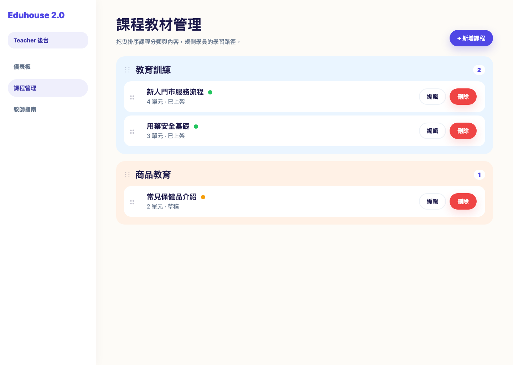
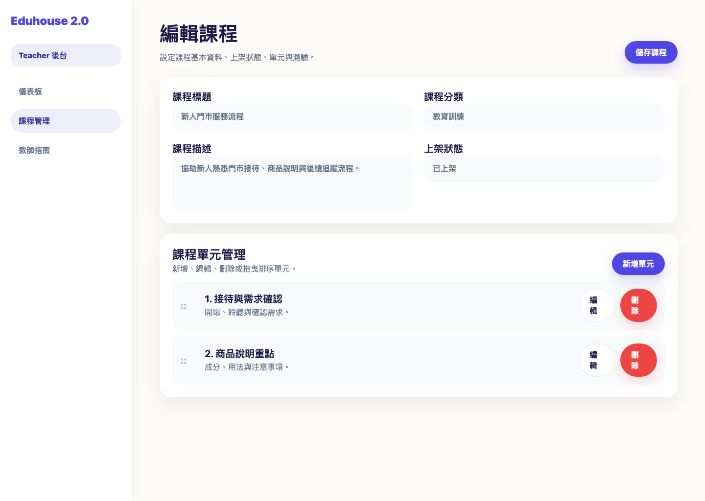
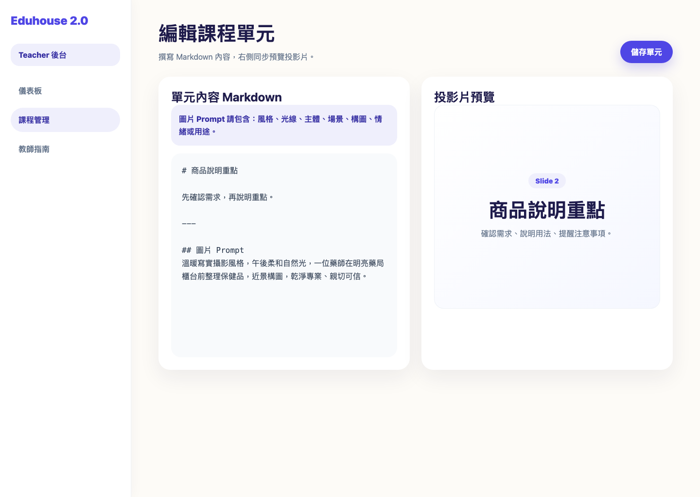
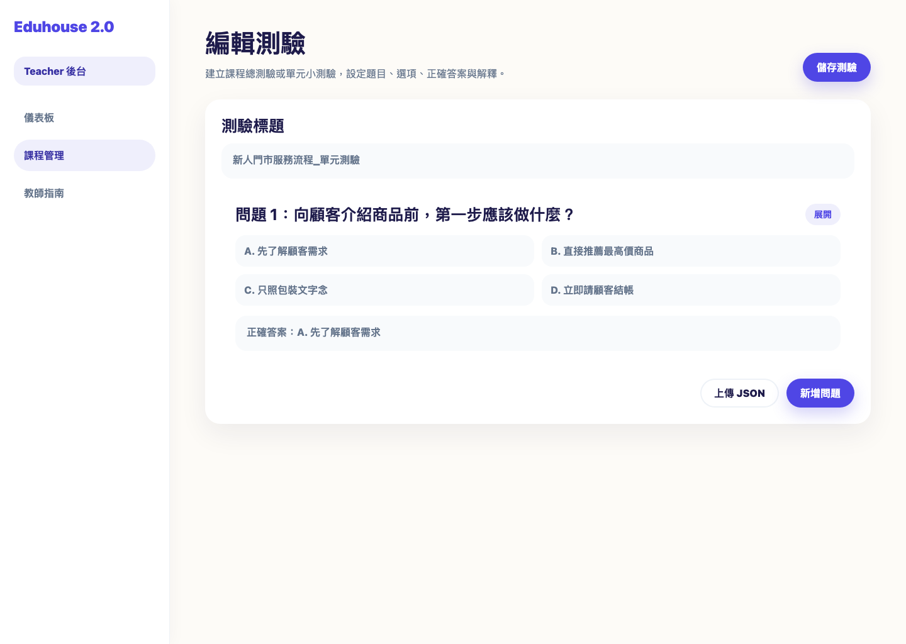
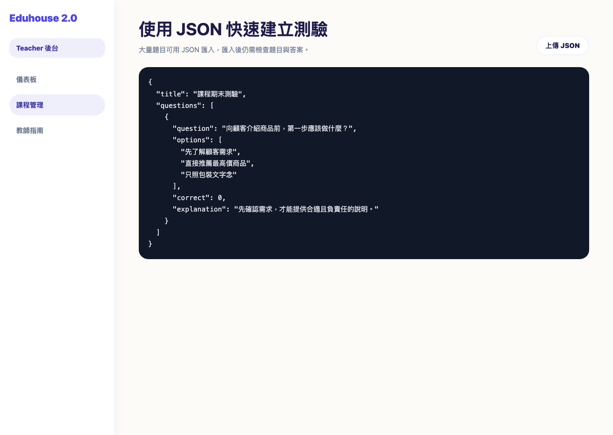

本手冊引導教師建立、管理課程內容以及製作測驗，協助快速完成教育訓練教材上架。
課程是所有教學內容的基礎。您可以建立不同的課程，並在其中新增多個教學單元。

在「課程教材管理」頁面中，教師可以快速掌握所有課程的分類、排序、上架狀態與單元數。

單元是課程的具體教學內容。每個課程可以包含多個單元。

平台使用 Markdown 撰寫內容，並整合 Reveal.js 製作投影片。每張投影片之間使用獨立一行 --- 分隔。
# 投影片 1 的標題 這是第一張投影片的內容。 --- # 投影片 2 的標題 - 這是第二張投影片的項目符號。 - 您可以繼續新增內容。
圖片提示詞需具體且具畫面感，避免只寫「藥局圖片」、「保健品照片」這類籠統描述。
[風格]，[光線]，[主體] 在 [場景]，[構圖/鏡頭]，[情緒/品牌感/用途]。可使用 <iframe> HTML 標籤嵌入 YouTube 影片或外部網頁。建議貼入後先查看右側投影片預覽是否正常。
教師可以為整個課程或特定單元建立測驗，以評估學生學習成效。


大量題目可使用 JSON 匯入。匯入後請務必再次檢查題目、選項與正確答案。
{
"title": "課程期末測驗",
"questions": [
{
"question": "Vue 3 的主要響應式 API 是什麼？",
"options": ["Options API", "Composition API", "React Hooks"],
"correct": 1,
"explanation": "Composition API 是 Vue 3 的核心新功能。"
}
]
}